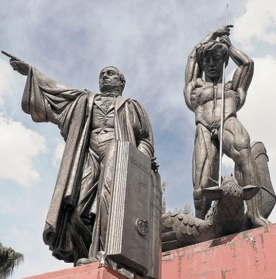

El monumento a la razón, también conocido como monumento a la ignorancia y coloquialmente llamado "el mono bichi", es una estructura de 30 toneladas y 14 metros de altura. Desde el inicio de su construcción en 1960 hasta la colocación en 1964 durante la Administración Municipal de Jesús Francisco Cano e inaugurada por el presidente de la República, Adolfo López Mateos en 1964, fue una obra controversial por ser un desnudo.
La obra fue realizada por el escultor español Alfredo Just, quien murió a los 66 años en Nogales, Arizona, el 7 de agosto de 1966.
Costó medio millón de pesos y fue financiada tras una colecta pública y recursos de la logia masónica, construyéndose en una bodega de la Escuela Secundaria Federal número Uno, ubicada por la Avenida Álvaro Obregón.
Fue edificada en dos partes divididas en la zona de la cintura y desde su construcción hasta colocación causó controversia en una parte de la comunidad al considerar que la ciudad de Nogales no estaba preparada para una escultura de desnudo de esas dimensiones.
El "Mono Bichi" no es una escultura independiente, ya que es parte de tres piezas que la conforman, una es la figura del ex presidente Benito Juárez como rector del nuevo orden socioeconómico del País, del conocimiento, la industrialización.
El indígena que representa el pueblo asesinando con una lanza a la tercera pieza, que es un ave mítica en el suelo que representa la ignorancia, el oscurantismo, lo retrógrado y el pasado.
Las tres piezas son identificadas como Conjunto Escultórico Juárez. Por décadas permaneció en la Plaza Benito Juárez hasta febrero de 2009 cuando iniciaron las labores para removerlo de ese sitio a unos 60 metros al Norte de la Plaza por parte de la empresa estadounidense Vint & Associates Architects Inc.
A pesar de su relocación, el monumento a la razón sigue siendo un atractivo turístico para quienes visitan la ciudad y definitivamente representa un elemento importante de nuestra comunidad.